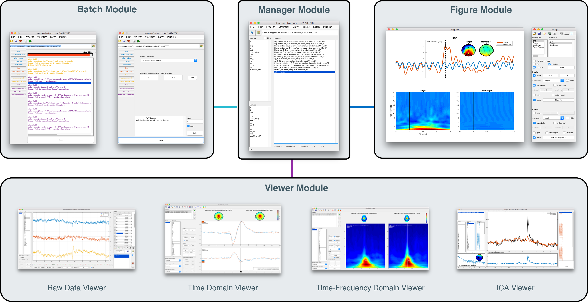

The Framework of Letswave7 is shown in the following figure, It includes four modules, which are manager module, batch module, viewer module, figure module. 
Manager module
Manager module is the main interface of Letswave. It can be launched by typing ‘letswave’ in the MATLAB command prompt. In the manage module, all the dataset is managed by the affix in the file name, which is separated by space. Multiple datasets can be very easily and quickly selected under the filtering of the affixes in the two list boxes in the left side, even there is tens of thousands of datasets in the current folder. After the file selection, we can do the delete/rename, or further processing on these datasets. The interface to the other modules is provided in the menu of the manager module and right-clicking the datasets.
Batch module
Batch module contains multiple processing functions for the data analysis. For the multiple datasets analysis, batch module allows the GUI-based user to do the same operations for the multiple datasets, or do the continuous multiple steps operations on the same dataset(s). This history of the operation on the dataset can also been viewed in the batch module. More complex, users can define their own processing flow, which may involve multiple datasets and multiple operation steps. The frequently-used processing flow can also be saved in the menu of the manager module. For the next time, the user can call out the processing flow, and just modify the input datasets to run the analysis.
Viewer module
Viewer module is used for the observation of one or multiple dataset(s). Viewer module includes a set of viewers, which are used for the observation of the raw data and the result in time analysis and time-frequency analysis respectively. For the multichannel datasets with multiple epochs, the viewer allows the user to display the result in separated windows in different rows or columns, or superimpose different datasets/channels/epochs in the same windows. Spatial topography information can be jointly displayed for a single time/frequency point or the mean value from certain interval. Simple statistic of the mean, maximum and minimum value with their location on the selected interval would make the work of peak detection with their latency information become simple and intuitive.
Figure module
Figure module is used for the graphics generation, which can be directly used in the publication or presentation, or send to the other graphics software for further editing. The GUI-based user can make their graphics from certain templates or directly from a blank canvas. The figure module allows user to flexibly customize the layout, free to the style of font, line, map. Further, the graphics can also be saved as a template. For the next time, the user can just open the template and replace the dataset to generate a new graphic.